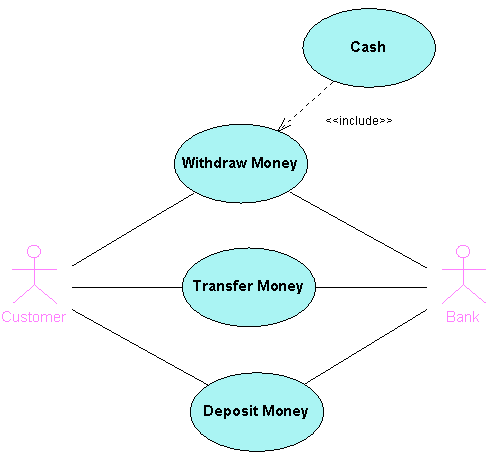
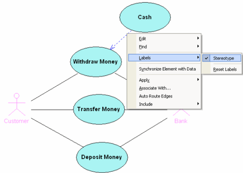
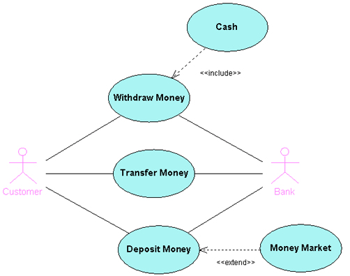
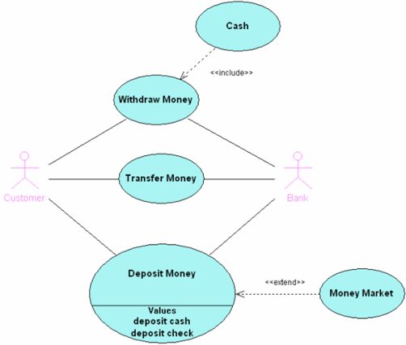
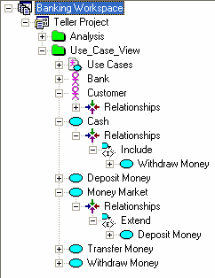

Working With Dependencies and Extension Points
The UML Modeling feature enables you to set up certain relationships within a Use Case diagram:
The following exercise illustrates each kind of relationship. Start with an empty Use Case diagram.
Creating Elements and Associations
- Create two Actors named Customer and Bank.
- Create three Use Cases named Withdraw Money, Transfer Money, and Deposit Money.
- Associate Customer with all three Use Cases by dragging an Association from Customer to each Use Case.
In the Modeling Palette window, click the Association icon and drag from one element to the other.
- In the same way, associate Bank with all three Use Cases.

Adding an Include Dependency
- Create another Use Case named Cash.
- In the Modeling Palette, click the Include icon
 .
.
- In the diagram, drag the Include relationship from Cash to Withdraw Money.

Notice that the relationship is stereotyped as <<include>>.
- You can move the stereotype around the diagram without losing the stereotype's integrity. You can also hide stereotype labels.
- In the diagram, right-click the relationship and choose Labels > Stereotype.

Adding an Extend Dependency
- Create another Use Case named Money Market.
- In the Modeling Palette, click the Extend icon
 .
.
- In the diagram, drag an Extend relationship from Money Market to Deposit Money.

Notice that the relationship is stereotyped as <<extend>>.
- In the diagram, right-click the relationship and choose Labels > Stereotype.
Adding Extension Points
- In the diagram, select Deposit Money.
- In the Properties window, select the Extension Points row.
- In the Extension Points dialog box, click Add and type Name.
The IDE names the extension point.
- To add more documentation to the extension point, in the Properties window, choose the Documentation field to open the Advanced Documentation Editor.
The IDE creates a values compartment inside the Use Case element that displays the extension points.

- To see the include or exclude relationship with its corresponding Use Case, navigate to the Use Case in the Projects window and expand the nodes underneath it.

Legal Notices